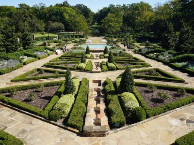

Fort Worth Travel Guide
Major metropolitan destination known for its Western heritage, world-class museums, renowned cultural districts, historic stockyards, vibrant dining scene, and diverse entertainment attractions.
Places to See in Fort Worth

Jeff P from Berkeley, CA, USA, CC BY 2.0, via Wikimedia Commons; Image Size Adjusted
.jpg){kind=link}
Amon Carter Museum of American Art
Museum featuring an extensive collection of American paintings, photographs, sculptures, and works on paper spanning the nineteenth century to the present day.

Jeff P from Berkeley, CA, USA, CC BY 2.0, via Wikimedia Commons; Image Size Adjusted
Fort Worth Botanic Garden
Expansive public garden featuring themed landscapes, educational exhibits, and seasonal floral displays across 120 acres.

Jeff P from Berkeley, CA, USA, CC BY 2.0, via Wikimedia Commons; Image Size Adjusted
Fort Worth Museum of Science and History
Interactive museum offering hands-on science exhibits, historical displays, a planetarium, and an IMAX dome theater.

Jeff P from Berkeley, CA, USA, CC BY 2.0, via Wikimedia Commons; Image Size Adjusted
Fort Worth Stockyards
Historic entertainment district featuring preserved livestock industry landmarks, western-themed shops, restaurants, rodeos, live music venues, and daily longhorn cattle drives.
-400.jpg)
Jeff P from Berkeley, CA, USA, CC BY 2.0, via Wikimedia Commons; Image Size Adjusted
Fort Worth Water Gardens
Architecturally designed urban park featuring cascading waterfalls, tranquil reflection pools, geometric concrete terraces, and dramatic water displays.
Jeff P from Berkeley, CA, USA, CC BY 2.0, via Wikimedia Commons; Image Size Adjusted
Kimbell Art Museum
Architecturally renowned museum featuring a world-class collection of European, Asian, and pre-Columbian art alongside rotating special exhibitions.
Jeff P from Berkeley, CA, USA, CC BY 2.0, via Wikimedia Commons; Image Size Adjusted
Modern Art Museum of Fort Worth
Striking contemporary museum showcasing post-World War II international art in a minimalist concrete and glass structure with a reflecting pond.
Jeff P from Berkeley, CA, USA, CC BY 2.0, via Wikimedia Commons; Image Size Adjusted
Tarrant County Courthouse
Historic pink granite courthouse housing county government offices, courtrooms, public records services, and notable late nineteenth-century architecture.
Overview
Fort Worth is a city in North Texas, the western half of the Dallas–Fort Worth metroplex, and it is known as "Cowtown" and "Where the West Begins" for its cattle-drive history and Western heritage. It is famous for the Fort Worth Stockyards, a historic district where visitors can see a twice-daily cattle drive, for a world-class collection of museums in its Cultural District, and for the Fort Worth Zoo. The city has a more relaxed, Western character than Dallas, with a revitalized downtown.
Visitors come to Fort Worth for the Fort Worth Stockyards, where they can see Texas longhorns, rodeos, and Billy Bob's Texas, the world's largest honky-tonk. They also come for the Kimbell Art Museum, the Modern Art Museum, and the Amon Carter Museum, as well as for Sundance Square, the Fort Worth Botanic Garden, and the zoo.
History
Fort Worth was founded in 1849 as an Army outpost on a bluff above the Trinity River and named for General William Jenkins Worth, a hero of the Mexican–American War. In the 1860s and 1870s, it became a major stop on the Chisholm Trail, where cowboys drove millions of cattle north to Kansas railheads, and the town's rowdy district, called Hell's Half Acre, was well known. The arrival of the railroad in 1876 made it a livestock and meatpacking center, and the discovery of oil in West Texas and the opening of military bases made it an aviation and defense center in the twentieth century. Amon Carter, a newspaper publisher, helped promote the city's Western image.
Sightseeing and Popular Landmarks
The Fort Worth Stockyards National Historic District has brick streets, saloons, and shops, and a herd of longhorns is driven down the street twice a day. Sundance Square is a downtown area of restaurants, theaters, and shops, and the Fort Worth Water Gardens is a unique park with terraced pools and fountains. The Tarrant County Courthouse, built in 1895, is a Renaissance Revival landmark, and the Vintage Flying Museum has historic aircraft.
Culture and Museums
The Cultural District has some of the best museums in the country. The Kimbell Art Museum, designed by Louis Kahn, houses an art collection from antiquity to the twentieth century, and the Modern Art Museum of Fort Worth, designed by Tadao Ando, is housed in a striking building with a reflecting pool. The Amon Carter Museum of American Art has a collection of Western art and works by Frederic Remington and Charles Russell, and the Fort Worth Museum of Science and History is a family favorite. The National Cowgirl Museum and the Bass Performance Hall are also in the area.
Parks
Fort Worth has an extensive park system. The Fort Worth Botanic Garden is the oldest botanical garden in Texas and has a Japanese garden, and the Fort Worth Zoo is consistently ranked among the best in the country. The Trinity Trails run along the river for miles, and Log Cabin Village is a living history museum of pioneer life. Lake Worth and Eagle Mountain Lake offer boating and fishing, and Fort Worth Nature Center & Refuge, one of the largest city-owned nature centers in the country, has a herd of bison.
Seasons and Weather
Fort Worth has a humid subtropical climate. Summers are hot, with highs in the upper 90s°F, and winters are mild, with highs in the 50s°F and a few inches of snow. Spring and fall are the most pleasant seasons, and severe thunderstorms, hail, and tornadoes are possible in spring. Ice storms can occasionally occur in winter.
This article uses material from Wikipedia as well as information from official tourism and institutional sources. Key references include Visit Fort Worth, Fort Worth Stockyards, Kimbell Art Museum, Modern Art Museum of Fort Worth, Fort Worth Zoo, Texas Tourism, and National Weather Service Fort Worth. Wikipedia material is from the article "Fort Worth, Texas", and is available under the Creative Commons Attribution-Share-Alike License 3.0.